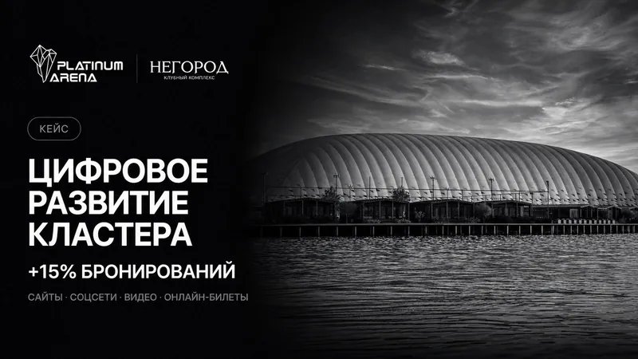

Чат-боты и автоответы
Подготовим ответы на частые вопросы, сбор контактов и передачу диалога сотруднику. Сценарий строим под вашу услугу и возможности выбранной площадки.
Автоматизация обращений · Воронеж
Клиенты пишут в разные каналы, сотрудники повторяют одни и те же ответы, а контакты приходится переносить вручную. Настроим понятный путь от первого сообщения до записи или передачи заявки.
Выясним, откуда приходят обращения, кто на них отвечает и где возникает задержка. Выберем действия, которые можно автоматизировать, и оставим сотруднику вопросы, требующие личного решения.
Подготовим ответы на частые вопросы, сбор контактов и передачу диалога сотруднику. Сценарий строим под вашу услугу и возможности выбранной площадки.
Поможем клиенту выбрать услугу и отправить запрос на запись. Возможности расписания и подтверждения согласуем с учётом вашей системы.
Настроим передачу данных из согласованных форм и каналов. Проверим, какие поля нужны сотруднику для продолжения разговора.
Согласуем получателей уведомлений и пройдём сценарии на тестовых данных. Покажем, как проверить работу и изменить доступные настройки.
Вместо набора несвязанных сообщений у вас будет понятный порядок приёма обращений. Передадим настроенные сценарии, доступы и инструкции для команды.

Из нашей практики
Для спортивно-гостиничного кластера настроили онлайн-продажу билетов, бронирование услуг, электронное расписание и онлайн-консьержа. Это упростило работу с обращениями гостей.
Посмотреть проект ↗Стоимость зависит от числа каналов, сценариев и интеграций. До начала проверим возможности ваших сервисов и согласуем смету. Подписки на CRM, сервис записи или платформу бота учитываются отдельно.
Работаем с бизнесом Воронежа и области. Задачу и материалы можно обсудить онлайн. Сроки фиксируем после того, как определим объём работ.
Получить расчёт для моей задачи ↗Бот может ответить на типовой вопрос и собрать нужные данные. Нестандартные ситуации и личный разговор остаются за сотрудником. Переход к человеку закладываем в сценарий.
Сначала проверим вашу CRM и доступные способы подключения. Возможность интеграции, передаваемые поля и ограничения согласуем до начала работ.
Да. Например, с уведомления о новой заявке или ответов на частые вопросы. Сначала проверим этот участок, затем обсудим дальнейшую автоматизацию.
Обсудим ваш проект
Пришлите ссылку на сайт или соцсеть и коротко опишите задачу. Ответим в течение рабочего дня.
+7 952 101 90 67